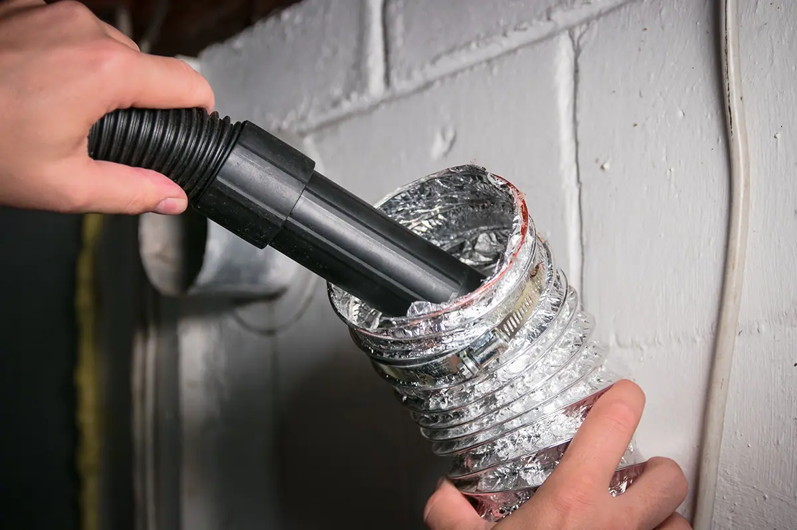
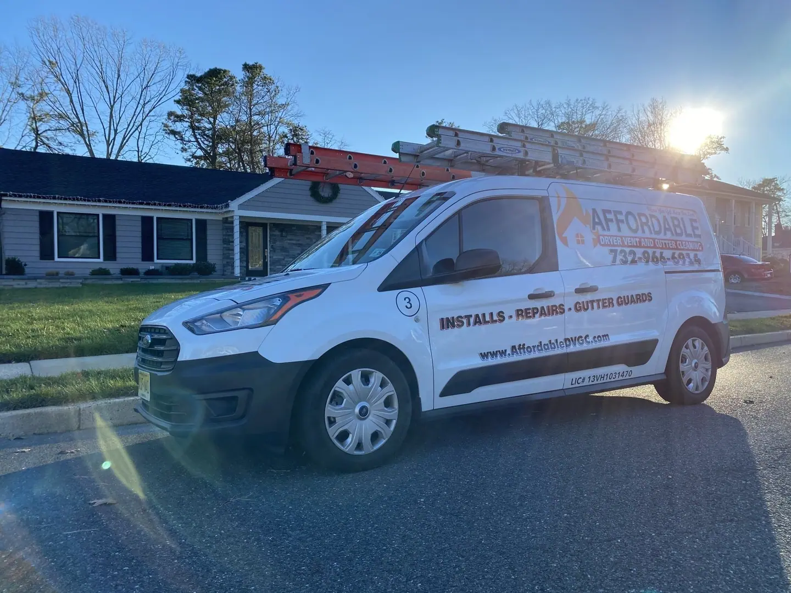
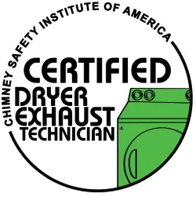
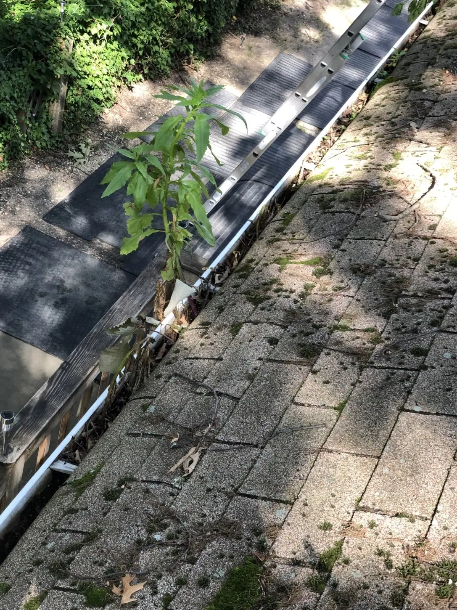
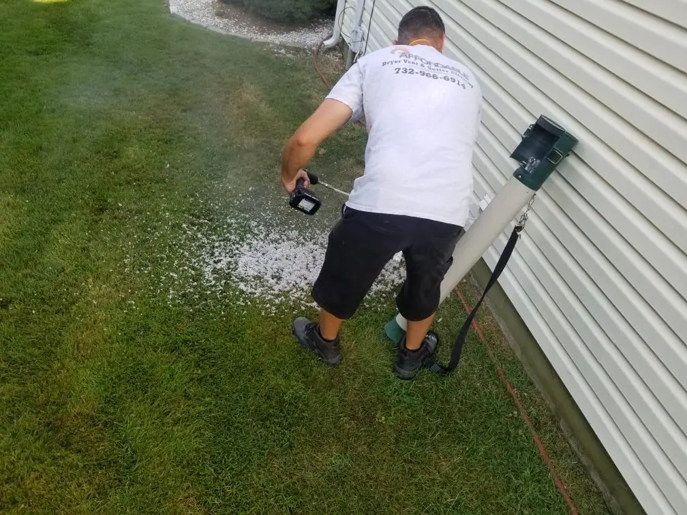

Dryer Vent Services
- Prevent fires
- Reduce utility bills
- Increase the lifespan of your dryer
- Reduce drying times
- Upgrade and repair dryer ventilation systems

Competitive Pricing | Free Consultations and Estimates | Family-Owned & Operated

CSIA certifiedNJ LIC# 13VH1031470Family ownedReal family photograph from the current site.
In such uncertain times, we here at Affordable Dryer Vent & Gutter Cleaning are certain of one thing: the value of ensuring the safety of yourself and your loved ones.
We pride ourselves on our family values and on educating our customers of the risk of house fires. While we are quite confident in ourselves, we will always allow you to make informed decisions for your home and family.
We love and live by allowing ourselves to make lifelong relationships, ensuring your safety and, lastly, the longevity of your dryer.
Our dryer vent installations, repairs, cleanings, and upgrades will benefit your home in many ways.


Nicholas Petito is a licensed and locally raised specialist. He is a member of the NFPA.
“I started this company with a clear undertaking to help protect my friends, family, and neighbors from senseless property damage and loss while saving them hard-earned money yearly. I provide each one of my customers with fast, honest, reliable, and inexpensive service because each one is treated like family.”
“I have made it my mission to use my professional capabilities to educate my community in fire protection safety. I guarantee that we will provide our customers phenomenal service that will have them referring AFFORDABLE Dryer Vent & Gutter Cleaning to all their trusted friends and family.”
AFFORDABLE Dryer Vent & Gutter Cleaning is a local, family-owned, and family-operated company.Local expertise, family values, and practical safety-first service.
Affordable Dryer Vent & Gutter Cleaning offers dryer vent and gutter cleaning, installations, repairs, and upgrade services to Ocean County, Monmouth County, NJ and surrounding areas.
Gutter Guards, dryer vent products and installation accessories.
Dryer Vent Installation and Cleaning; Gutter Installation, Cleaning, and Repair.
Dryer Vent Cleaning · Dryer Vent Installs · Dryer Vent Installation Rerouting · Gutter Cleaning · Gutter Guards · Gutter Installation · Gutter Repair
Mon – Sun · 8:00 am – 8:00 pm
American Express · Cash · Check · Discover · MasterCard · Visa
English
Dryer vent cleaning, repair and installation — plus expert gutter care.
From clogged dryer vents to gutter guards, we treat every home like family. Tell us what you need and we’ll help you decide on the next step.

Trained and certified to help keep your dryer running safely and efficiently.
Local · Family-Owned & Operated